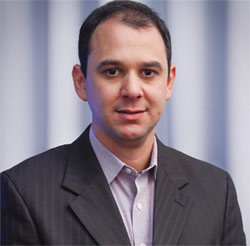

Marcos Dos Santos
Brasileiro,Solteiro,Nascido em 15/12/1984
Contato:
- Endereço:Pedro de Toledo ,92 - Centro - Marilia-SP
- Telefone Fixo:(14)0000-0000
- Telefone Movel:(14)00000-0000
- Email:marcosdossantos@gmail.com
Objetivo:
- Area de Analise e Desenvolvimento de Software
Formação:
- Tecnico em Desenvolvimento de Sistema(Etec Antonio Deviste)-2011
- Ciencia da Computação(Univem marilia)-2015
Idioma:
- Ingles fluente
- Espanhol intermediario
Conhecimento em Informatica
- Pacote Office
- Pacote Adobe
- Corel Draw
- Microsoft Visual Code
Principais Competencias:
- Liderança,foco em resultados e espirito de equipe,Perfil empreendedor
Estagios
- Kernel Desenvolvimento de Software para empresas - 2011-2013
Referencias:
- Sr.Gimenez - Proprietario- Kernel Software -(14)0000-0000